Mi proyecto de vida
ESTA SOY YO, ESTOS SON MIS PLANES DE VIDA Y AQUI MUESTRO QUIENES ME AYUDARON A SER YO
Sobre mí
Mi nombre es Maria Fernanda pero mis conocidos siempre me han llamado mafe, soy estudiante de grado once, me encantan los idiomas,
me considero alguien responsable y organizada, amo los animales y ayudar a las personas cada que me sea posible.
Soy una persona resrvada suelo ser muy selectiva con respecto a quien está en mi vida


Objetivos
Mis metas a corto plazo: Una de mis mayores metas a corto plazo es entrar a la universidad que deseo y poder estudiar negocios internacionales
Mis metas a mediano plazo: Mi meta seria ya estar terminando mi carrera y ya hablar inles fluido y estar terminando un tercer idioma
.jpg)
Meta a largo plazo: Mi meta es estar trabajando en una buena empresa, ganando un buen sueldo, formando mi vida personal y ya hablando tres idiomas y en lo posible estar aprendiendo otro

Habilidades
Entre mis habilidades esta que soy muy organizada y tambien aprendo bastante rapido, me encanta leer, aprender nuevos idiomas y aprender cosas diferentes todo el tiempo
Yo creo que una de mis fortalezas es que aprendo rapido, se me facilita comprender temas "complejos", me gusta mucho leer de nuevos temas y tambien aprender idiomas
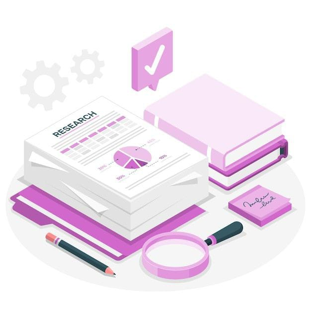Mis hobbies
Entre mis hobbies está leer, me encantan los romances, sobre todo si puedo leerlos en otro idioma
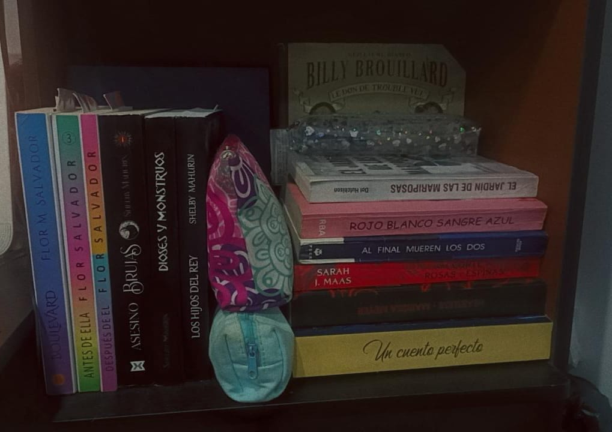Tambien me encantan los deportes, sobre todo el voleibol
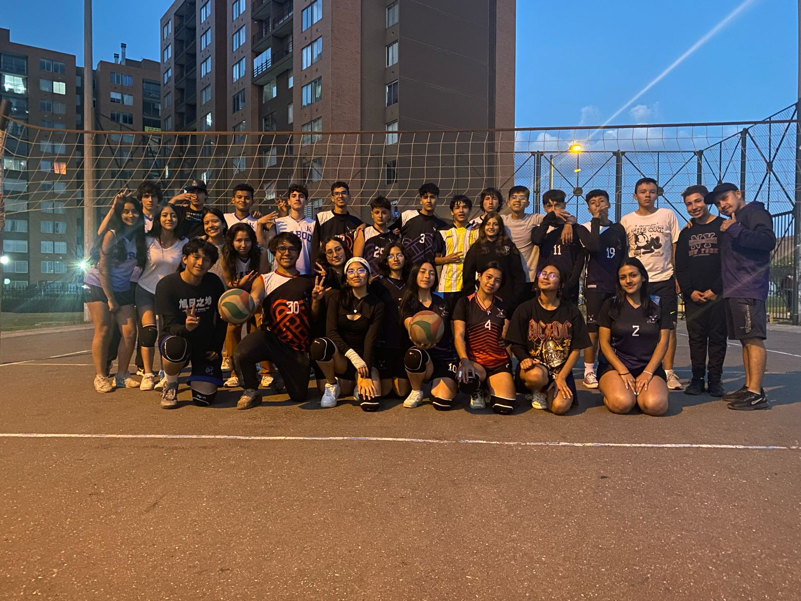Mi familia
Mi familia esta conformada por mi papá, mi mamá, mi hermano, mi abuelo, mi novio, mi perrita, mi gato.
Somos una familia muy unida, nos encanta compartir muchos momentos juntos, nos facina viajar, jugar juegos en familia. Considero que tengo una familia muy estable y amorosa, nos preocupamos mucho por cada integrante de la familia
A mi papá le encantan los deportes, a mi mamá le gusta hacernos comidas deliciosas y viajar, a mi hermano le encantan los videojuegos, a mi abuelo le gusta jugar boli rana y ajedrez,
a mi novio le encanta el voleibol, mi perrita ama dormir y comer y mi gato ama comer y enojarse
Todos nos parecemos en algo y nos amamos a pesar de todos ser diferentes, todos me apoyan y confian de lo que soy capaz por eso son mi familia
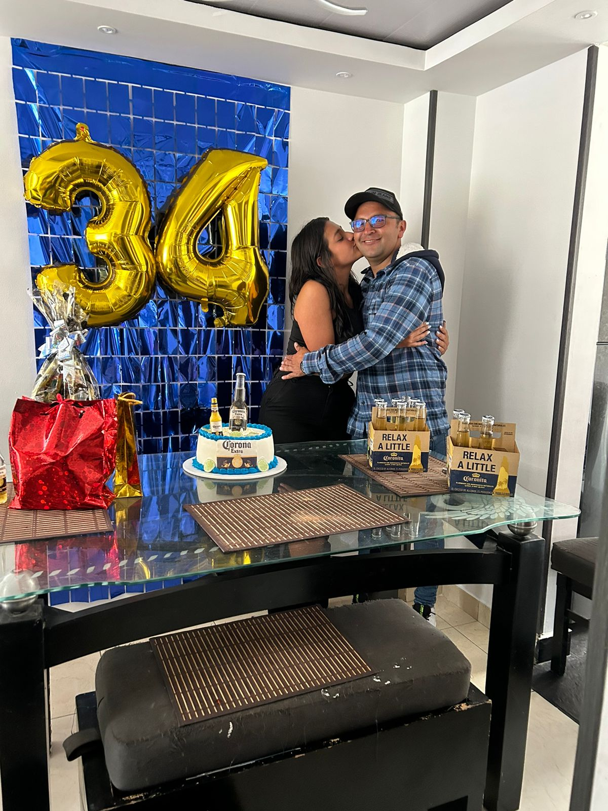 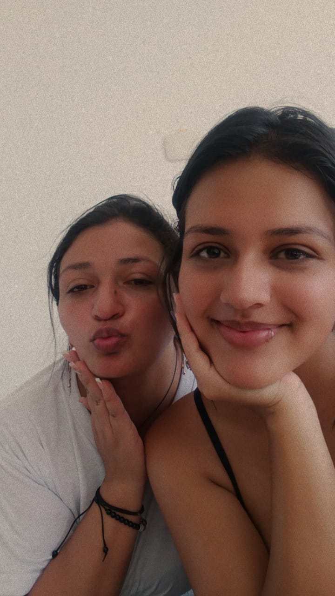 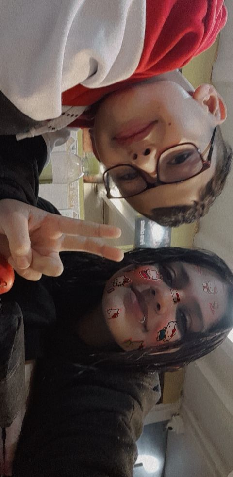 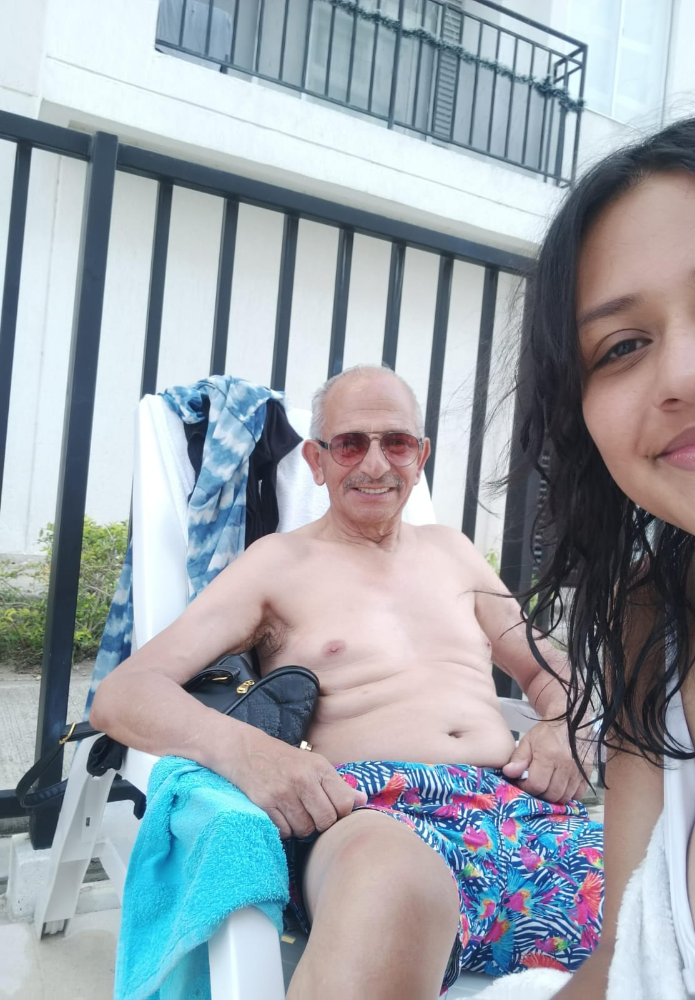 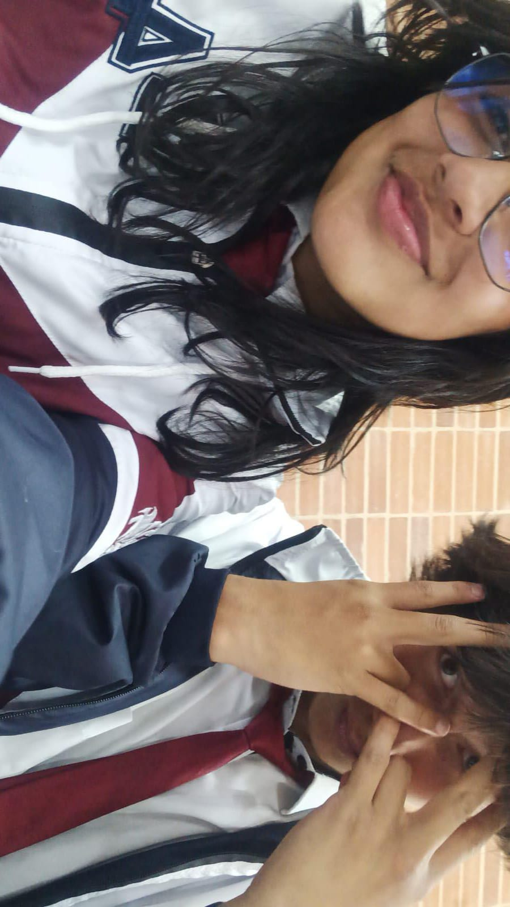 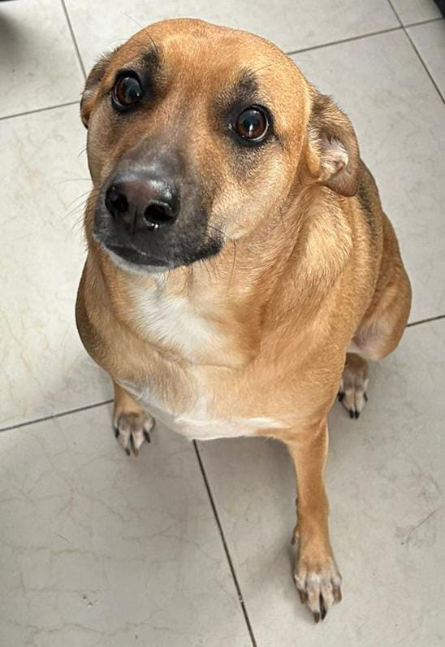 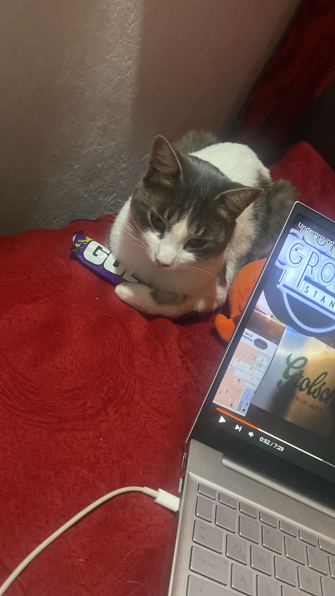 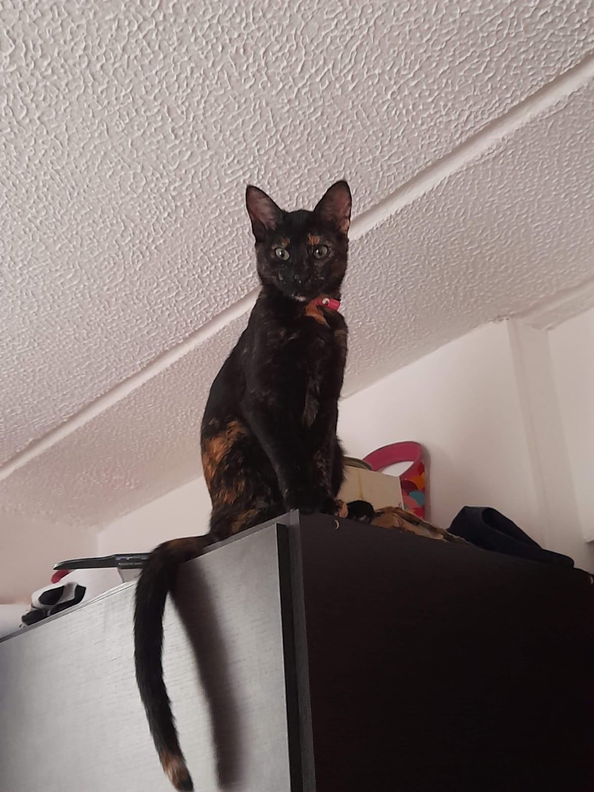